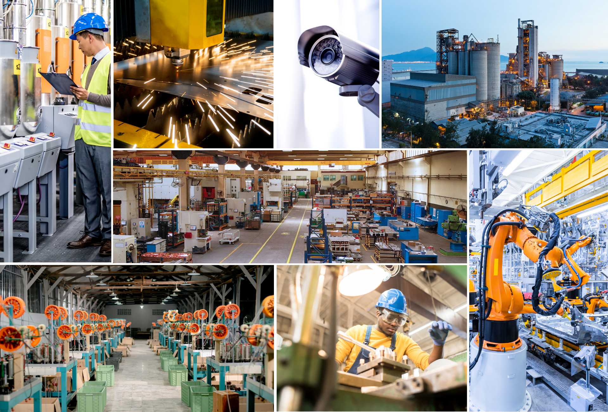

카메라를 비즈니스 인텔리전스로 전환합니다 Turn Cameras Into Business Intelligence
Vaidio는 기존 카메라에 AI를 오버레이하여 안전 위협, 품질 이슈, 공정 중단, 재고 손실을 실시간으로 감지하고 대응합니다. Vaidio overlays AI on your existing cameras to detect and alert on safety risks, quality issues, disruptions, and inventory losses—in real time.

핵심 기능 및 효과 Key Features & Benefits
가동 중단 최소화 Minimize Downtime
라인 정지, 유휴 장비, 공정 이상을 즉시 감지하여 다운타임을 최소화합니다. Instantly detect line stoppages, idle equipment, and process anomalies to minimize downtime.
작업자 안전·컴플라이언스 Worker Safety & Compliance
PPE 착용 여부, 낙상, 지게차 근처 위험 행동 등을 모니터링합니다. Monitor for PPE usage, falls, and hazardous behavior near forklifts or machinery.
품질·생산성 향상 Improve Quality & Output
오염물질, 잘못 적재된 트레일러, 제품 결함을 비용 문제가 되기 전에 감지합니다. Detect contaminants, improperly loaded trailers, and product defects before they become costly problems.
자산·재고 보호 Protect Assets & Inventory
고가 제품 이동을 추적하고 절도를 방지하며 야드 물류를 개선합니다. Track the movement of high-value goods, prevent theft, and improve yard logistics.
교체 없이 확장 Scale Without Rip-and-Replace
기존 카메라 및 영상 시스템에서 바로 작동합니다. Works with your existing cameras and video systems with no replacement required.
주요 과제와 Vaidio 솔루션 Key Challenges & Vaidio Solutions
위험 작업 구역에서 PPE 착용 여부를 지속적으로 확인하기 어렵습니다. Continuously verifying PPE usage in hazardous work zones is challenging.
PPE 컴플라이언스 모니터링으로 실시간 알림을 전송하고 OSHA 준수를 지원합니다. PPE compliance monitoring sends real-time alerts and supports OSHA compliance.
반복 가능한 결함 감지 테스트 없이 불량품이 출하될 수 있습니다. Without repeatable defect detection, defective products may reach shipment.
자동 결함 감지로 높은 반복성과 감사 추적을 제공하여 불량률을 줄입니다. Automated defect detection provides high repeatability and audit trails to reduce reject rates.
재고 분실, 수작업 로깅, 적재 손상으로 비용이 발생합니다. Lost inventory, manual logging, and loading damage cause significant costs.
크로스카메라 추적·번호판 인식·적재 컴플라이언스 검증으로 야드 물류를 자동화합니다. Cross-camera tracking, LPR, and load compliance verification automate yard logistics.
Vaidio를 선택하는 이유 Why Choose Vaidio
가장 정확한 AI Most Accurate AI
10년 이상 3,000여 개 객체로 훈련된 30+ AI 모델로 높은 감지 정확도를 보장합니다. 30+ AI models trained over 10+ years on 3,000+ objects for high detection accuracy.
모든 카메라·VMS 호환 Any Camera, Any VMS
Milestone, Genetec, Axis 등과 호환되며 기존 시스템을 교체할 필요가 없습니다. No rip-and-replace; works with Milestone, Genetec, Axis, and more.
엣지~클라우드 유연성 Edge to Cloud Flexibility
IoT 엣지, 온프레미스, 클라우드, 하이브리드 배포를 모두 지원합니다. IoT edge, on-premises, cloud, or hybrid deployments—all supported.
엔터프라이즈 준비 완료 Enterprise Ready
Kubernetes 기반 아키텍처로 플로팅 라이선스, 워크로드 최적화, 멀티테넌트 서비스 포털을 제공합니다. Kubernetes-enabled architecture with floating licenses, workload optimization, and multi-tenant service portal.
제조 / 물류 AI 영상분석 도입을 검토 중이신가요? Ready to Transform Your Manufacturing & Logistics Operations?
퓨텍솔루션즈 전문가와 함께 귀사 환경에 최적화된 Vaidio 솔루션을 검토해 보세요. Work with Futec Solutions specialists to explore the optimal Vaidio solution for your environment.